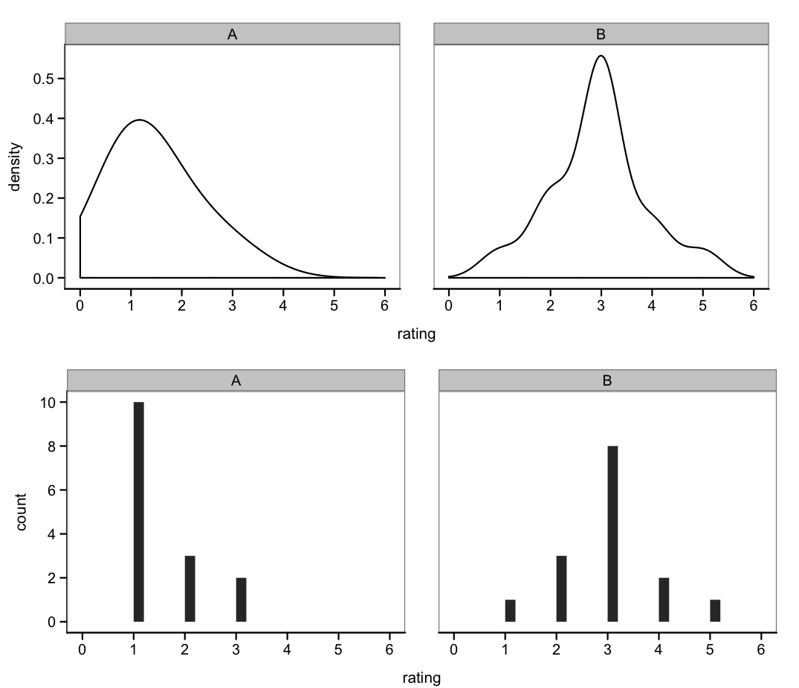

name: title class: middle, center, dark <center> <embed src="images/title.svg" type="image/svg+xml" height="100px" align="center" style="border: 0px solid lightgray;"/> </center> --- class: light, center, middle, clear # Measures, Reliability, & Validity --- class: light # Outline **Reliability & Validity** - Concepts - Examples **Measures** - Types of measures - Statistics and measure choice --- class: light # Ground rules of experimental psych Interested in psychological behavior, phenomenon, or construct -- - Sources of the construct - Effects of other factors - Individual variability -- Create an **instrument** that **operationalizes** the construct -- - Usually easy to measure quantitatively - Takes behavior out of the real world, brings into the lab where it can be manipulated -- Make argument about how to connect this instrument to the construct of interest --- class: light # Concepts **Reliability**: how well did we measure? -- - What is the error in the measurement? - What part of it is due to observers, items individuals, noise? -- **Validity**: how well does this measurement represent the construct of interest? -- - **Face** validity: does it look like the construct? - **Internal** validity: are you actually measuring something related to the construct? - **External** validity: does your measure relate to other measures of the construct? --- class: light # Reliability **Test-retest reliability** - Do the same thing again later - Perhaps with a marginally different set of “items” operationalizing the same concept? -- **Inter-observer reliability** - Does a different person looking at the same behavior code the same thing? - Cohen's kappa -- **Intra-item reliability** - Do two different questions group together across participants? - Crohnbach’s alpha --- class: light # Internal validity - How well a study was run - How confidently you can conclude effects were produced solely by IV - "Was it really the treatment that caused the difference between the subjects in the control and experimental groups?" - Experimenter expectancy effects -Hawthorne effects --- class: light # Hawthorne effects - The performance of subjects in some studies can be a product or reaction of the experimental setting. -- - **Hawthorne effects**: Subjects who know they are participants in a study may react differently to the treatment than a subject who experienced the treatment but was not aware of being observed (Hawthorne Effect). -Performance increases during studies -Critiques - https://en.wikipedia.org/wiki/Hawthorne_effects .center[] --- class: light # Experimenter expectancy effects How many of the predicted results were significant (meta analysis from 1970s)? How much of this is a correct theory vs. experiment expectancy? .footnote[(Rosenthal & Rosnow, 1978)] --- class: light # Issues in internal validity **Stimulus specificity** - Is effect general across items? .footnote[Campbell & Stanley (1966)] -- **Order effects** - Subjects become tired and bored, more or less motivated -- **Testing effects** - A pretest can affect subjects' performance on a post-test -- **Selection** - Subjects in comparison (e.g., the control and experimental) groups should be functionally equivalent at the beginning of a study. -- **Experimental Mortality/Attrition** - If one group has higher dropout than others, may bias selection --- class: light # External validity: some issues Is there a relationship between your measure and real-life behaviors that should be controlled/affected by your construct? - **Concurrent** validity: measure correlates with some other important measure - **Predictive** validity: measure predicts to an outcome .footnote[Campbell & Stanley (1966)] --- class: light # Case Study: IQ “There is nothing as important about an individual as his IQ.” .center[] --- class: light .center[] --- class: light # Is Raven’s reliable? - 576 veterans took Raven’s - Split half correlation between scores = .93 -So double length would be .96 -Via Spearman-Brown formula --- class: light # Is Raven’s internally valid? **Confounds** in administration or in design? - Unwanted factors affecting results - (E.g. item and order effects in other types of experiment)? **Demand** characteristics? - Unusual for difficult performance-based measures - But potentially common for measures of opinion, reaction, etc. --- class: light # Are IQ measures externally valid? Do they measure something outside of themselves? - Correlate with other IQ tests - Predict life outcomes .bottom[(Deary et al., 2004)] --- class: light # Effects of IQ on income .bottom[(Murray et al., 1998)] --- class: light # Example IQ critiques **External** validity - Valid across cultures? **Internal** validity - Compromised by bias against particular populations - Stereotype threat? - May tap multiple constructs at once? --- class: light # Outline **Reliability & Validity** - Concepts - Examples **Measures** - Types of measures - Statistics and measure choice --- class: light Nominal: distinct types Ordinal: ordered types Interval: quantitative Ratio: quantitative with a zero point --- class: light # Why be careful about scales? - Only some analyses are applicable to some scales - You wouldn’t want to take the mean of an ordinal variable -- -Elementary school education -High school graduate -Some college -College graduate -Graduate degree -- - Doesn’t make sense to take the mean - Midpoints are not interpretable - Instead you can take the median --- class: light # Nominal variables Sets of things - Football player numbers - Subject numbers - Flavors of ice cream - Therapy, Drugs, Drugs+Therapy, Control - Friends, Romans, Countrymen --- class: light # Nominal variables: Statistics How do you find the central tendency? - Mode -- How do you test for differences in distribution? - Chi-square tests are convenient --- class: light --- class: light # Ordinal variables **Arbitrary orderings** - Rankings (SES, competition results) - Likert scales (e.g. from 1-7) - We’ll come back to this --- class: light # Ordinal variables (cont'd) --- class: light # Likert scales --- class: light # Common Likert Scales - Strongly Agree - Agree - Undecided - Disagree - Strongly Disagree - Very Frequently - Frequently - Occasionally Rarely - Very Rarely - Never - Extremely Poor - Below Average - Average - Above Average - Excellent - Almost Always True - Usually True - Often True - Occasionally True - Sometimes But Infrequently True - Usually Not True - Almost Never True --- class: light # Ordinal variables How do you find the central tendency? - Median -- How do you measure relationships between ordinal variables? - Spearman correlation -- How do you test for differences in distribution? - Well... It depends. - Definitely non-parametrics, but also (maybe) standard stats for Likert scales? --- class: light # Correlation on ordinal scales Spearman correlation measures correlation in ranks --- class: light # Non-parametric statistics - General family of statistical tests appropriate for ordinal data -- - Assume ordering but not interval -- - Also useful for cases in which data violate linearity -Make fewer distributional assumptions -Less power -- - Examples (all named after dudes) -Mann-Whitney/Wilcoxson (t-test) -Kruskal-Wallis (ANOVA) --- class: light # The case of Likert scales Common to assign numeric levels: - E.g. strongly agree = 1, strongly disagree = 5 Can you average these levels? - This is a question about whether 1 is as far from 2 as 2 is from 3 - Not clear, though common practice is to do so One rule of thumb is that stuff is more interval around the middle but gets weird around the edges --- class: light, center, middle, clear # Problems with averaging Likerts  --- class: light # Interval variables Equal increments but no true zero - Celsius temperature - Measuring people -Intelligence -Fitness -BMI In the social sciences, we often don’t care about zero .center[<img src="images/thermometer.png" width="200">] --- class: light # Ratio variables Intervals with a true zero - Temperature in Kelvin - Reaction time (sometimes) - Numbers of things <img src="images/RT.png" width="200"> --- class: light # Interval and ratio variables: Stats How do you find the central tendency? - Mean -- How do you measure relationships between ordinal variables? - Pearson correlation -- How do you test for differences in distribution? - Regression, ANOVA, etc. -- Bonus- What else do you get for ratio variables? - Answer: logarithms! --- class: light # Stevens (1946) classification --- class: light # Measure choice considerations Spectrum: number of alternatives - 2AFC – Many AFC – Free response -- Information content - More alternatives = more information -- Task demands - Fewer alternatives = faster, easier for kids/impaired populations, automatic responses - Fewer alternatives better for RT -- Ease of analysis - E.g. free response hard to analyze! -- Diagnosticity - More alternatives is more difficult - Too easy or difficult and you can’t see differences between participants (floor/ceiling effects) --- class: light # Information content .bottom[(Rosenthal & Rosnow)] --- class: light Thanks to XXX for some of the slides.